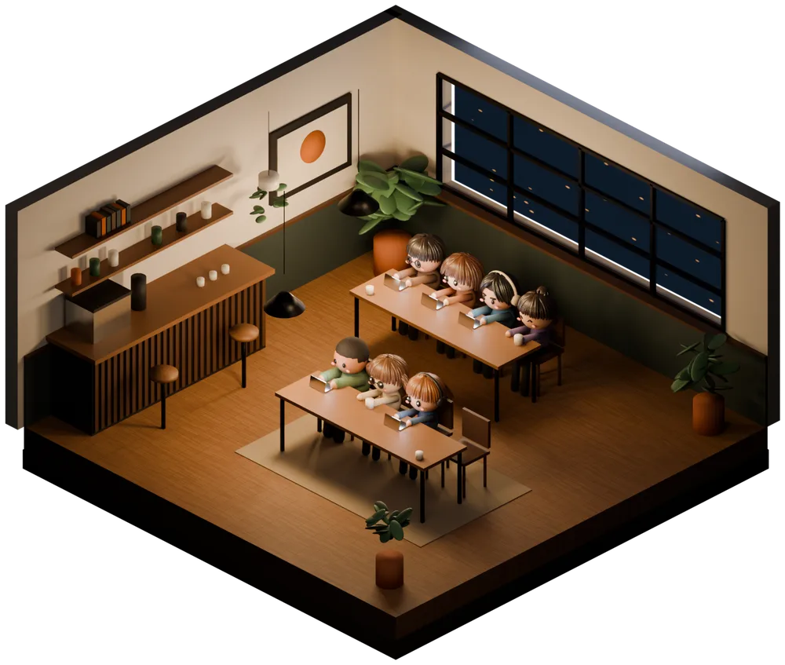
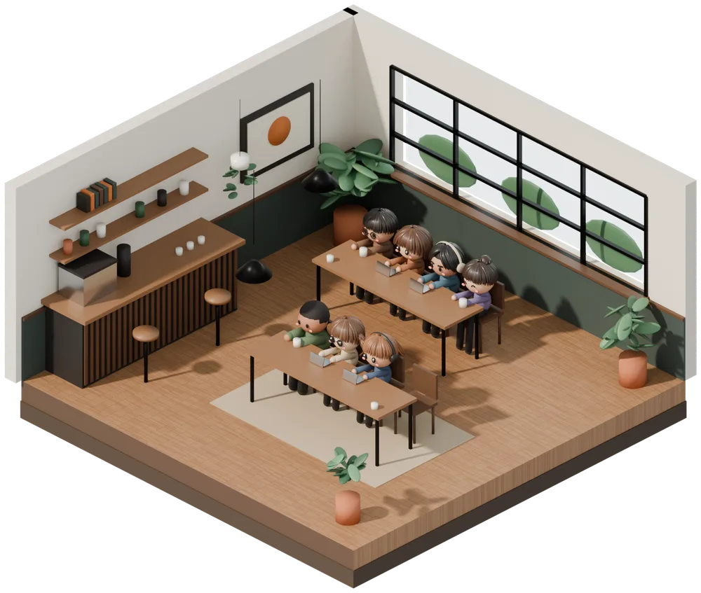
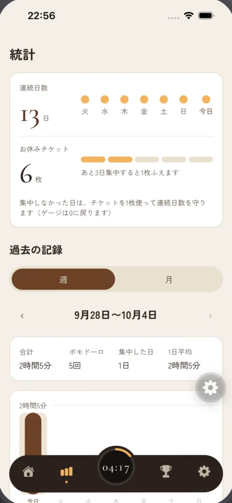
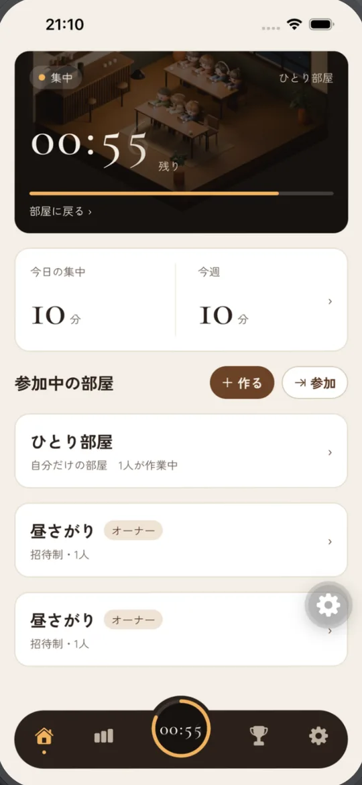
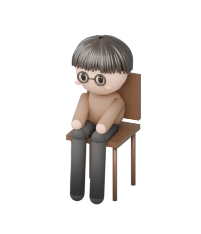

FOCUS集中
ランプの灯る夜のカフェで、BGM を聴きながら作業に没頭します。集中しているあいだはチャットも広告も出ないので、作業をじゃまされません。
Pomodoro × Cafe
Focus Cafe（フォーカスカフェ）は、カフェの作業風景と環境音の中で、仲間とゆるく一緒に集中できるポモドーロタイマーアプリです。招待制の部屋に最大20人で集まり、通話もマイクも使わずに、それぞれのペースで作業できます。

What is Focus Cafe
家だと集中できないのに、カフェや図書館だとはかどる。そんな経験はありませんか。まわりで誰かががんばっている「気配」は、集中を続ける助けになります。
Focus Cafe は、その気配をスマホの中のカフェで再現します。部屋に入ると、あなたのアバターがカフェの席に座ります。同じ部屋の仲間が「集中」しているか「休憩」しているか、あと何分かが見えるので、声をかけ合わなくても一緒にがんばれます。
時間の区切りには、25分集中して5分休む「ポモドーロ・テクニック」を使います。集中と休憩の長さは自分で変えられます。
Night & Day
タイマーに合わせて、カフェの景色が変わります。いま集中する時間か、ひと息つく時間か、画面を見ればすぐに分かります。
ランプの灯る夜のカフェで、BGM を聴きながら作業に没頭します。集中しているあいだはチャットも広告も出ないので、作業をじゃまされません。

集中の時間が終わると、自動で休憩に入り、明るい昼のカフェに変わります。休憩のときは、チャットで「おつかれさま」を送り合えます。
Features
Room
部屋に入ると、4人掛けのテーブル2つ（8席）の空いている席に、自分のアバターが座ります。タイマーは一人ひとりのものなので、ほかの人に合わせる必要はありません。好きなときに座って、好きなときに抜けられます。
Chat
やりとりは、部屋の中の文字のチャットだけです。通話のように声や生活音を気にする必要はなく、顔も出しません。集中しているあいだはチャットを読み書きできないので、休憩の時間にまとめて読めます。

Streak
1日に1回ポモドーロを終えれば、連続日数が1日のびます。5日続けるごとに「お休みチケット」が1枚もらえ、集中できなかった日は自動でチケットが使われて、連続日数が途切れません。

Timer
タイマーは「終わる時刻」をもとに動いているので、ほかのアプリを使っていても、画面を消していても、時間は正しく進みます。集中と休憩が終わったときは、アラーム音つきの通知でお知らせします。

Avatar
部屋の席に座るのは、あなたのアバターです。顔・髪型・髪の色・体型・服・小物を組み合わせて、自分らしい姿にできます。集中しているときはノートパソコンや本、スケッチブックなどを、休憩のときはコーヒーや抹茶ラテ、ケーキセットなどを手にします。
How to start
インストールしてから、最初のポモドーロを始めるまで1分ほどです。
Google アカウント（iPhone 版では Apple アカウントも）でログインします。メールアドレスやパスワードの登録はいりません。
ひとりなら「ひとり部屋」へ。仲間と使うなら部屋を作って招待コードを送るか、もらったコードで参加します。
席に座ったらタイマーをスタート。夜のカフェで BGM が流れ、集中の時間が始まります。
時間になると自動で休憩に。チャットでひと息ついたら、次のポモドーロへ。
Compare
「誰かと一緒に作業する」方法はいくつかあります。Focus Cafe は、通話ほど気をつかわず、ひとりのタイマーより続けやすい、そのあいだを目指しています。
| Focus Cafe | 作業通話 （Discord など） | オンラインもくもく会 （Zoom など） | ふつうの ポモドーロタイマー | |
|---|---|---|---|---|
| 声・顔 | 出さない（文字のチャットだけ） | 声を出す・聞く（ミュートもできる） | カメラをオンにすることが多い | 使わない |
| 一緒にいる感じ | 席のアバターと「集中・休憩」の表示で分かる | 声や物音で分かる | 画面の顔で分かる | なし（ひとり） |
| 時間の区切り | 一人ひとりのポモドーロタイマー | 特になし（タイマーは別に用意する） | 主催者の進行に合わせることが多い | あり |
| 参加のしかた | 好きなときに入って、好きなときに抜ける | 好きなときに入れる | 開催の時間に合わせる | いつでも |
| 記録 | 集中時間・連続日数・ランキング | 特になし | 特になし | アプリによる |
ほかの方法の欄は一般的な使われ方の例です。使うツールや集まりによって変わります。
For you
自習室のように、まわりががんばっている空気の中で勉強を進めたい人に。連続日数で毎日の勉強を習慣にできます。
家だとついだらけてしまう人に。同僚やチームで部屋を作れば、通話をつながなくても「一緒に働いている」感覚になります。
イラスト・執筆・プログラミングなど、ひとりで長く向き合う作業に。休憩で進み具合を報告し合えます。
「毎晩21時に集まって1時間」など、友達との約束の場所に。声を出さないので、夜遅くや家族のいる部屋でも使えます。
Pricing
タイマー・部屋・チャット・ランキング・連続日数は、ずっと無料で使えます。
0円登録するだけで、ずっと使えます
300円 / 月年額なら 2,400円（月あたり200円）
価格は2026年10月時点のものです。実際の価格はストアの購入画面に表示されます。解約はストアからいつでもできます。
集中しているときは広告が出ません。お休みチケットや有料の背景のお試しがほしいときに、自分で選んで見る広告だけがあります。
FAQ
はい。タイマー・部屋・チャット・ランキング・連続日数は無料で使えます。すべての背景と BGM や、30日より前の記録を見たい人向けに、有料のサブスクリプション「FocusCafe Plus」（月額300円・年額2,400円）があります。
使いません。一緒に作業している人の様子は、席に座ったアバターと「集中」「休憩」の表示で伝わります。やりとりは200文字までの文字のチャットだけなので、声や顔を出さずに作業できます。
使えます。登録すると自分だけの「ひとり部屋」ができ、そこでポモドーロタイマーを使って作業できます。連続日数や記録も、ひとりのときと同じように残ります。
なりません。部屋は、作った人が招待コードを送った人だけが入れる招待制で、公開の部屋の一覧もありません。1つの部屋には20人まで参加でき、同時に座れるのは8席です。困った相手は通報・ブロックできます。
25分集中して5分休む、をくり返す時間管理の方法です。作業を短い区切りに分けることで、取りかかりやすくなり、疲れる前に休めます。Focus Cafe でははじめ25分と5分に設定されていて、集中は5〜90分、休憩は1〜30分の範囲で変えられます。
止まりません。タイマーは終わる時刻をもとに動いているので、アプリを閉じても時間はずれず、終わったときは通知でお知らせします。部屋の画面を離れても、タイマーと BGM はそのまま続きます。
自分が集中していないとき（休憩しているときや、タイマーを動かしていないとき）に使えます。集中しているあいだは読むことも書くこともできないので、作業に集中できます。メッセージは7日たつと消えます。
連続日数を守るためのチケットです。ポモドーロを1回もしなかった日は、チケットが自動で1枚使われ、連続日数が途切れません。はじめに5枚もらえ、5日続けて集中するごとに1枚増えます（持てるのは10枚まで）。
勝手に表示される広告はありません。お休みチケットや有料の背景のお試し（24時間）がほしいときに、自分で選んで見る広告だけがあります。集中しているときは広告を表示しません。
iPhone 版は現在 App Store の審査中です。公開されたらこのページでお知らせします。Android 版（Android 8.0 以上）は Google Play で配信しています。
アプリの「設定」→「アカウントを削除」から削除できます。アプリを使わずに削除を頼む方法は、アカウントとデータの削除のページをご覧ください。
インストールは無料。ひとり部屋なら、今すぐ始められます。